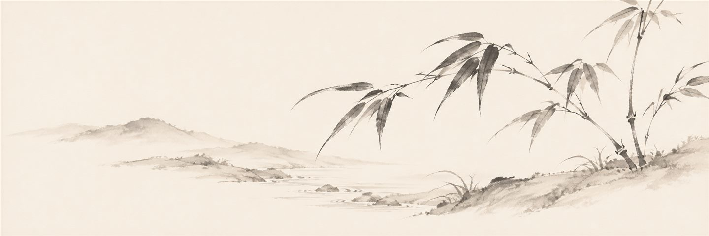

書畫設計系統
互動元件
先看一個元件如何工作，再回整合示範看圖、字與閱讀次序如何配合。十二項各有獨立錨點、操作和參數註記。
CalligraphyHero
書法式卷首
使用方式與參數
輸入真實姓名、英文附標、身分、三枚字形與主圖；窄版改為上下配置，姓名仍是文字。
卷首示範
嚴浩然
YIM HO YIN
國立成功大學中國文學系博士候選人


InkReveal
墨圖揭示
使用方式與參數
依 data-duration 設定單次揭示時間，建議 420–560ms。這是原圖的裁切顯現，不是歷史筆順復原。

ScrollPainting
可橫讀的畫卷
使用方式與參數
傳入圖組和唯一容器 ID。原生滑動、方向鍵及前後按鈕皆在圖版區域內作用。
山間網站設計插圖 
江岸網站設計插圖 疏竹網站設計插圖
ScrollNarrative
章節敘讀
使用方式與參數
傳入有錨點的章節與標題。寬版固定目次，窄版在正文上方；不固定正文或攔截滾輪。
材料與題名
關注清華簡、安大簡等材料與傳世文獻之思想關聯。
脈絡與說明
博士論文主題，聚焦早期中國思想中的倫理判斷、政治秩序與修養實踐。
VerticalTypography
短題籤縱書
使用方式與參數
輸入一至六個字的題籤與橫書說明，520px 以下回到橫排。
觀畫讀文
短題籤把圖與文字分開；註解、年份和長文維持橫排。
ArtworkGallery
圖集與題跋
使用方式與參數
傳入圖組與 ID；選圖同步標題、題跋及原圖連結。無 JavaScript 時各縮圖仍可直接開啟。

ArtworkZoom
局部放大
使用方式與參數
傳入來源圖版和唯一控制 ID；可修改 range 的初始值與上下界。本例為 100–200%，可用鍵盤調整。
TextReveal
段落呈現
使用方式與參數
每段保持完整，以 data-duration 設定淡入時間。沒有動畫時，所有字立即可見。
嚴浩然，國立成功大學中國文學系博士候選人，中國思想專攻。研究領域為先秦思想、荀子哲學、出土文獻思想與中國早期倫理與政治思想。
考察荀子思想中的倫理語彙、政治秩序與實踐問題。
PageTransition
紙面淡接
使用方式與參數
同源跨頁在支援 View Transition 時淡接，時間可在 CSS 設定；無支援仍直接開頁。請由本機 HTTP 預覽測試。
PaperTexture
紙面紋理
使用方式與參數
以 CSS 變數控制紋理透明度。靜態 SVG 不逐幀重畫，列印與強制色彩移除。
紙面樣本
紙面保留淡淡的紋理，題跋、書目和按鈕不靠紋理辨識。
AnnotationPanel
題跋與學術註解
使用方式與參數
傳入標籤與文字。原生 details 可用鍵盤或觸控展合，也能在無 JavaScript 時工作。
題跋｜留白與視線
留白在此用來分開近景與遠景。文字題跋置於圖框外，先呈現所見，再說明設計取捨；這是觀畫示例，不是對特定古畫的考釋。
圖版來源
三幅圖均是現有學術網站的設計插圖。原圖可獨立開啟，未使用本次參考站的作品、字型或聲音。
姓名古文字
此處嚴、浩、然三枚圖形依使用者提供的原圖顯示。圖形用於身分識別；年代、文字系統與歷史來源未作鑑定。